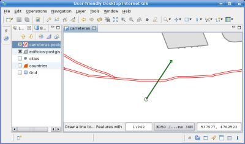
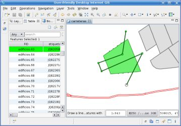
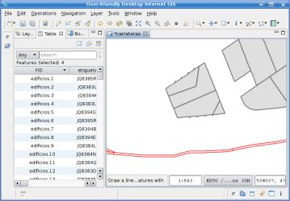

Lerro batez gurutzaturiko featureak zatitzen ditu.
Lerro batez gurutzaturiko featureak zatitzen ditu. Lerro batez gurutzaturiko featureak zatitzen ditu.
Zatiketa tresnak bi edo gehiago ataletan zatitzen ditu featureak erabiltzaileak mozketa lerro bat bezala marrazturiko lerro bat erabiliz.
Zatiketa tresnak jadaneko Geruzatik aukeratutako featuren gainean burutzen du. Bounding Box bidezko aukeraketa edo beste edozein featuren aukeraketa metodo bat erabili daiteke, Zatiketa tresna erabili aurretik zatitzeko featureak mugatzeko. Jadaneko geruzak ez badu inongo aukeraketarik, Zatiketa tresnak edozein Featureren gainean burutuko du jadaneko geruzan, zeinen lehen geometria ebaketa lerroagatik gurutzatua izango den.
Zatiketa tresna feature bat zatitzen doanean, zatitzeko den featurea ezabatuko du eta zatiketatik sortuko diren hainbat zati berri besteko feature sortuko ditu.
Gogoratu beharra dago Zatiketa tresnak ez duela emaitza gordetzen, nahi izanez gero eragiketa desegitea uzten bait dizu, edo aldaketak gorde barnealdeko datuen tokira uDig-ek normalean egingo lukeen bezala.
Ikusten dena gordetzen dela zaintzearen helburuarekin, eta ondorioz erabiltzaileak burutzen dituen ekintzekin bat izatea, Zatiketa tresnarekin sorturiko geometriak lehenbizi maparen CRS-an sortuak izango dira, eta gero barreneko CRS-ari proiektatuak izango dira gordetzeko.
Honekin emaitzako geometriak erabiltzaileak marrazturiko lerroagatik moztuak direla ziurtatzen da, aurkakoa eginez emaitza desberdinera eraman bait dezake maparen CRS-ak eta datuak desberdinak bait dira.
Zatiketa tresna aukeratu hedatze zerrendatik 1 irudian agertzen den bezala.

1 irudia. Zatiketa tresna aukeratzen.
Mozketa lerroa bezala erabiliko den lerroa marraztu, zatitu nahi diren geometriak mozten direla ziurtatuz, 2 irudian agertzen den bezala.

2 irudia. Mozketa lerroa marraztu LineString-a zatitzeko.
Klik bikoitza egin mozketa lerroaren azken erpina gehitzeko eta zatiketa eragiketari jardun dezan adierazteko.
3 irudiak nola mozketa lerroagatik gurutzatua izan den jadaneko geruzako LineString-a bitan zatitua izan den erakusten du.

3 irudia. Bitan zatitutako LineString-a.
Hurrengoa poligono bat nola hainbat ataletan zatitu erakusten duen beste adibide bat da.
4 irudiak jadaneko geruzan aurretik aukeratutako poligono baten gainean marrazturiko mozketa lerro bat erakusten du. Taula Bistak aukeratutako poligonoen berezitasun datuak erakusten ditu.

Figura 4. Dividiendo un polígono seleccionado
4 irudia. Aukeratutako poligono bat zatitzen.
5 irudiak oraintsu sortutako poligonoak erakusten ditu mozketa lerroa amaitu eta zatiketa eragiketarekin jardun ondoren.

5 irudia. Poligono bat zatitzearen emaitza.
6 irudian Taula Bistan oraintsu sorturiko Featuren berezitasun datuak ikusi daitezke, Bounding Box baten bitartez emaitzako poligonoak aukeratu ondoren. Egiaztatu espero zen bezala euretariko bakoitzak Feature ID berri bat izatea, eta jatorrizko Featurearen berezitasun datu berberak eduki dezaten.

6 irudia. Gorde gabeko feature berriak sortuak.
{kind=link}
{kind=link}
{kind=link}